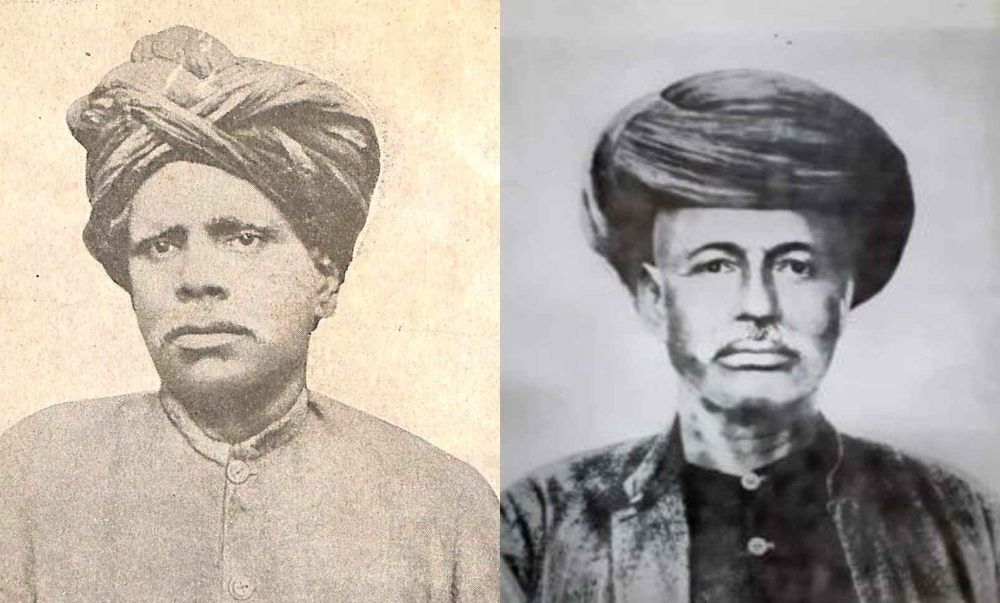

Kandukuri Veeresalingam and Jotirao Phule
Introduction
19th century was the time of the ascendance of western influence across the world. In India too, 19th century was a momentous time. Most of the country was under British control, either directly or indirectly. These administrative changes brought about changes in the social conditions. Aquaintance with Christian evangelical thought, and the basics of physical and natural sciences, created an intellectual atmosphere conducive to free examination and discussion of the Hindu beliefs. It marked the real beginning of the history of modern Indian culture.
The impact of the Western ideas was starting to be felt all over India, starting at the College of William in Calcutta, resonating in all other centers of British administration like Madras and Bombay. Raja Rammohan Roy, often acknowledged as a pioneer of Indian renaissance, was active in Bengal. By the mid-19th century, the influence of Bengal reformers, especially that of Brahmo Samaj, would reach all over India.
Jotirao Phule belonged to the first generation of Indian thinkers who grappled with the challenges posed by the western thinking and the seeming backwardness of their own culture and society (Omvedt 2007). He belongs to the generation that critically examined the social and cultural traditions of their times, seeking to totally transform India, to recreate India by welding science and rationality to Indian culture.
Veeresalingam belongs to the section of reformers who came from the upper classes of Indian society - educated, upper caste men focusing on issues that plague Indian society in general and their classes in particular. The major focus on his reform efforts was widow remarriage, which was a problem of mostly the upper castes. A significant part of his work was focused on modernizing Telugu language and creating modern literature. The other social evils he focused on - child marriages, bride price, sati, nautch problem etc. - were also predominantly upper caste or class issues.
Methodology
We will compare the work of these two stalwarts on the following parameters - Social and political conditions of their times, Personal background and status, Reasons for beginning reformation work, Key areas of focus, Attitude towards the British and Indian political institutions, and Impact of their work.
The sources we use for this study are varied - biographies of Phule and Veeresalingam, articles and books written by prominent researchers, and two doctoral theses.

Discussion
Personal background and status
Veeresalingam
Veeresalingam was born on 16th April 1848, in a prosperous Brahmin family. His grandfather was a landlord, who entered the service of a Zamindar as an employee and reached the important position of Dewan. He was also generous to a fault, and his descendants did not inherit much of the wealth. His father and uncle were revenue officials in the British administration. It was a time when Brahmin officials wielded much power as civil servants. However, Veresalingam’s father passed away when he was 4. Veeresalingam was a frail and sick child - he survived a severe attack of smallpox as a child. He suffered from asthma, colds and dyspepsia as an adult.
Veresalingam was married around the age of thirteen, to a nine year old Bapamma, who was renamed Rajyalakshmi.
Veeresalingam was a bright student, and described himself as Ekasandhagrahi - some one who grasps at first glance (Anjaneyulu 1976) . After elementary education in a paiyal school, he joined the Government District school in 1860. He did well at school but his schooling was interrupted by family disputes as well as his own ill health. By the time he left school in 1870, he had qualified for various government services. He also had the option of becoming a lawyer. However, he chose to become a teacher, believing that the career will allow him more individual freedom.
Jotirao Phule
Jotirao was born in 1827 in a family of moderate means, belonging to the Mali caste. They belonged to the lower strata of the Hindu society, called Shudras. Jotirao’s great grandfather was a lowly village servant. By dint of hard work, his father Govind improved his position and set up a green grocery and flower shop in Poona (Keer 1960). In a world where non-Brahmin children rarely went to school, Govind had the inclination and the means to send Jotirao to school.
Jotirao was married to eight-year old Savitribai when he was thirteen, in accordance with the prevailing customs of the time.
Jotirao was a keen student and completed his schooling in 1847, from the Scottish Mission school. He was good friends with Sadashiv Ballal Govande, a Brahmin boy. Together, they trained their bodies under the tutelage of one Lahuji Buva Mang, an untouchable expert of military exercises. Eventually, the friendship extended to encompass two other Brahmin boys - Moro Vithal Walvekar and Sakharam Yeshwant Paranjape.
Reasons for beginning reformation work
Veeresalingam
Veeresalingam biographer D. Anjaneyulu (Anjaneyulu 1976) portrays him as a person with an independent mind and tastes, despite his orthodox upbringing. Even as a young boy, he could not stand injustice. According to this biography, “there is no evidence to show that Veeresalingam was directly influenced by any particular teacher or preacher in his ideas of social reform”.
Jotirao Phule
Phule biographer Dhananjay Keer (Keer 1960) mentions a variety of influences that sparked reformatory zeal in him. At home, he was friends with Muslim boys, which made him aware of Hindu beliefs. His studies at Sottish mission taught him the duties and rights of man. Thomas Paine’s Rights of Man is mentioned as an influence. The revolts that broke out against British rule between 1820 and 1850 impressed him. His friendship with Brahmin boys, whose elders were deeply upset by the fall of Peshwa rule, sowed anti-British seeds in his mind.
A specific incident where Jotirao was invited by a Brahmin friend to attend a marriage ceremony also finds important mention as the immediate trigger. When other Brahmin boys noticed him walking along with the procession, they got infuriated that a lowly Mali boy dared to join the procession. Terribly insulted by them, Jotirao returned home.
Key areas of focus
Veeresalingam
Veeresalingam’s first action in the reform area was to start a girls’ school in Dhavaleshwaram in 1874. He personally educated his wife, and later, she assisted him as a teacher for the widows in the hostels. Veeresalngam also started a girls’ school in Innispet in 1880.
He started a magazine named Vivekavardhini through which he attacked the prevailing customs like child marriage, kanyasulkam (bride price), and Nautch or Devadasi system. He also exposed corruption in the administration like the practice of granting pleaderships for money. He did substantial work in promoting the use of every day language in writing, as opposed to the archaic and artificial prose in fashion at that time. Veeresalingam, along with Gurajada Apparao and Gidigu Rammoorti Pantulu are considered the trio that modernised Telugu language and literature. He has many firsts in Telugu literature to his name, including the first full length novel and the first autobiography in prose.
In 1879, on the suggestion of a close friend, he started to think seriously about the remarriage of virgin widows. Building upon the work of Mahamahopadhyaya Paravastu Rangacharya, he built arguments based on various smritis to justify his position on widow remarriage (Anjaneyulu 1976). While he went around lecturing on this subject, his students were around him to ensure his physical safety. On December 11, 1881, he performed the first widow marriage in his house. He went on to perform 29 more such marriages by 1892 (Rao 2009).
The other area of his focus was religion and prayer. In 1878, he started Prarthana Samaj. Under the initiative of the samaj, various charitable works were undertaken, like the first night school for poor boys. A new school called Theistic School was started for the propagation of the pure doctrine of Theism. Around 1906, he contemplated leaving the orthodox Hindu fold and becoming a follower of Brahmo.
In 1890, he retired from all public bodies in his home town, including the Municipal Council where he was active till then. In the New Year honours list of 1893, he was awarded the title of Rao Bahadur, by the British Government. He relocated to Madras in 1898 and stayed there till 1905. In 1906, he started another girls’ school in Rajahmundry. He started another journal satyavadini.
To continue his work into posterity, he founded Hitakarini samaja in 1906 and endowed all his property to the society.
Jotirao Phule
Jotirao was focused on girls’ education from the beginning. He, along with his wife and friends, started three girls’ schools between 1850 and 1852. These schools were meant for girls from lower castes - shudra and ati-shudra castes, who were not permitted to attend school anywhere else. In May 1852, he formed a society for promoting education for Mahars and Mangs. His three Brahmin friends were part of the society. This arrangement ensured that the schools continued to function even as he withdrew from them.
Jotirao actively opposed the Brahminism that Hinduism had become. Instead of trying to find justification for his reforms in the Hindu system, he rejected the Hindu orthodoxy wholesale. He based the justification of his work with lower castes and girls on universal principles of equality, liberty and fraternity. He wrote a number of books criticizing the orthodox Hindu practices and puranas.
Moved by the plight of the widows, he started a home for Brahmin widows in his own home.
Jotirao, during his work as a contractor for government construction projects, understood the nature and extent of corruption in the administration. He actively sought to expose it. He wrote books exposing the corruption of the Brahmin clerks, who exploited laborers as well as agriculturists from lower classes. He wrote books about how priests exploited the religious beliefs.
In 1873, he established Satya-Shodhak Samaj, with the stated aim of redeeming the shudras and ati-shudras from the influence of brahminical scriptures and release them from the physical and mental slavery (Keer 1960). Other reforms envisaged by the samaj included restructuring the family in the private domain and building trade unions in the public domain (Chavan 2024).
Attitude towards the British and Indian political institutions
Veeresalingam
Veeresalingam was a moderate by his political ideas. He compared the times of the British with the post-Mughal lawlessness and praised them for bringing law, administration and security of life and property. Like many other 19th century reformers, he believed that the British rule was a boon to Indians. He cultivated good relationships with the district level British officials, as he needed their support with his reform agenda (Rao 2009).
Veeresalingam comes across as not having grasped the colonial agenda to the full extent. He was a moderate among the moderates. He took inspiration from the congress leadership at that time, which took moderate nationalistic positions.
Jotirao Phule
In the beginning of his work starting schools for lower caste girls, he was supported by the district level British officials. When the 1857 revolution broke out, his European friends and admirers shunned him, because of his patriotic antecedents and independence of mind. Thereaftrer, he did not visit Europeans except on invitation. Later, he never sought interviews with them (Keer 1960).
Jotirao was apathetic to the cause of the revolutionary struggle of 1857. If Nana Saheb, a descendant of the Peshwa succeeded, Poona would likely have gone back to Brahmin rule. This was not at all good for the lower castes. He believed that the British rule was favorable for social reform and progress. He exhorted lower classes to educate themselves and release themselves from the domination of Brahmins.
Jotirao did not have faith in the reform organizations like sarvajanik sabha, started by upper class men. He felt they were interested in the grievances of the higher castes and did not understand the ills plaguing lower classes. He believed that the lower castes needed their own reform organizations and pursue their own agendas.
Unlike many reformers of his era, Phule “did not refrain from acknowledging exploitation by the British colonialists or professing compassion for the Blacks in America, who stood against imperialism and apartheid” (Chavan 2024).
Impact of their work
Veeresalingam
One of the first causes that Veeresalingam took up was that of Widow remarriage. However, enforced widowhood was practically unknown in the lower castes (Anjaneyulu 1976). Thus, the cause was one that affected the upper castes - Brahmin and Vyshya castes in particular.
Veeresalingam’s activist work and writings helped increase the social awareness. Many societies and organizations across the Telugu speaking regions were formed under his influence.
Telugu language and literature firmly followed the path pioneered by Veeresalingam, Apparao and Gidugu Rammorti Pantulu.
Jotirao Phule
At least 1,000 books were written in Maharashtra under the influence of the Satya-Shodhak Samaj. Many social movements in Maharashtra, like peasants, women, Dalits, and working classes, were the offspring of the Samaj (Chavan 2024).
Satya-Shodhak Samaj gave a foundation to the non-Brahmin ideology and the ideas of equality, liberty and fraternity became the foundation for the subsequent struggles of the lower castes to claim their rightful place in the society. B.R. Ambedkar cites Jotirao among the people who inspired him.
Conclusion
The above study shows Veeresalingam and Phule were similar in many respects - both were tireless reformers, institution builders, and selfless souls. Both of them focused on girls’ education, widow remarriage or rehabilitation, and fighting against the social evils.
Speaking of the differences, Veeresalingam comes from an upper caste background - his main area of focus was widow remarriage. While he worked in the area of girls’ education and worked against the social evils, most of his work was as a journalist, writer and a public speaker. The evils he worked against were grievances of the upper classes. He did not work much in the area of caste eradication, and did not focus on the lowest of the lower caste groups. He made a great impact on Telugu language and literature.
Jotiba comes from a shudra background. His key area of focus was girls’ education where he spent 10 years running schools. With respect to widows, he saw that providing them homes to stay safely was important and took it upon himself to run one. THe bulk of his work is through his Satya-shodhak samaj, where he focused on releasing the shudra and ati-shudra classes from the tyranny of Brahminism. His political, economic and social ideas come across as being sound. His approach to reform, based on the universal values of equality, liberty and fraternity has succeeded in providing a sound ideological platform for the subsequent liberation movements.
References
This paper was written in December 2024, in partial fulfillment of the course requirements of Master of Arts in Elementary Education, at Tata Institute of Social Sciences.
Social and political conditions of the times
Politically, the country was coming under the control of a single sovereign power, for the first time in centuries. The old political and economic order was breaking up. The new revenue settlements created private property, and changed the fabric of Indian agriculture. The process of transformation, from a pre-capitalist feudal economy to a market driven economy was underway (Leonard 1991).
On the education front, major changes were in the offing. Macaulay’s minute of 1835 set the stage for Western learning. While wide spread government action would come only after Wood’s dispatch, private schools run by grants-in-aid from the government were spreading knowledge of English. This was a time of challenge for the old culture from the new.
Andhra
The idea of Andhra, a Telugu speaking region, was coming together. Earlier, different Telugu speaking regions were distributed under the Nizam, Marathas and the Nawab of the South. Between 1758 and 1801, through various wars, treaties and annexations, these districts came under the control of the British administration in Madras. Local chieftains and rajahs were eliminated and British were able to provide some administrative stability.
The political situation in Andhra before the British meant that the government was not particularly Hindu. However, the social patterns of the Hindu community like the join family system and caste system were intact. Religious practices were continuing as per tradition.
In the field of language and literature, substantial ground work was done in the 19th century. Telugu printing presses became available the first decade. Dictionaries were prepared and printed, aided by the work of Britishers like A.D. Campbell, William Carey and C.P. Brown. Contemporary classics like Kasee Yatra Charitra by Enugula Veeraswamayya, himself a reform oriented thinker and public figure, became available (Anjaneyulu 1976).
Poona
The Poona region was part of the Maratha empire of Shivaji Bhonsle. As the power of the Bhonsle clan waned, Peshwas took over the power. Towards the beginning of the 19th century, there were internecine wars between Holkars, Scindias and the Peshwas, which the British took advantage of. Finally, with the Third Anglo-Maratha War, the Maratha confederacy was completely defeated. In 1818, the British took control of the region.
Peshwas were Hindu Brahmins - while their rule was not a complete theocracy, they actively upheld Hindu Brahmin traditions. The state treated the caste system as a legitimate order of society, controlling and protecting it (Fukazawa 1968). These traditions included discrimination against non-Brahmin castes, especially in education. Shudras were not encouraged to study. Untouchables, a class that is below the Shudra and practically outside the established Hindu caste system, were treated inhumanly.